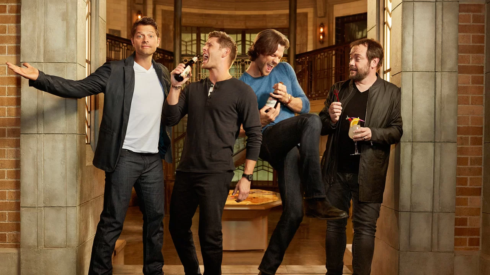

Supernatural
A série narra a história de dois irmãos, Sam Winchester e Dean Winchester, interpretados respectivamente por Jared Padalecki e Jensen Ackles, que caçam demônios, fantasmas, monstros vampiros e outras criaturas sobrenaturais no mundo.

A série narra a história de dois irmãos, Sam Winchester e Dean Winchester, interpretados respectivamente por Jared Padalecki e Jensen Ackles, que caçam demônios, fantasmas, monstros vampiros e outras criaturas sobrenaturais no mundo.
Jensen Ackles; Jared Padalecki; Misha Collins, Jeffrey Morgan
